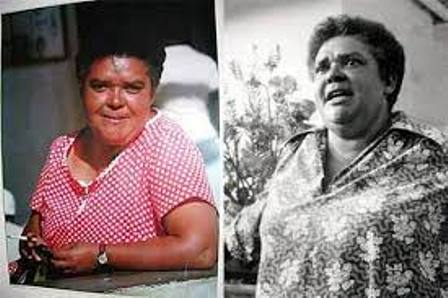

<!DOCTYPE html>
<html lang="en">

<head>
  <meta charset="UTF-8">
  <meta http-equiv="X-UA-Compatible" content="IE=edge">
  <meta name="viewport" content="width=device-width, initial-scale=1.0">
  <title>Black History Month</title>
  <!--Including leaflet in the application. Always load CSS file before JS file-->
  <link rel="stylesheet" href="leaflet/leaflet.css" />
  <link rel="stylesheet" href="style.css" />
  <script src="leaflet/leaflet.js"></script>
</head>

<body>
  <!--Creating the map container and is always a <div>-->
  <div id="map"></div>

  <!--Script files goes at the bottom of the body section-->
  <script>
    var map = L.map('map', {
      center: [7.29, 14.37],
      zoom: 2.5
    });

    var basemap = L.tileLayer('http://{s}.tile.osm.org/{z}/{x}/{y}.png', {
      attribution: '&copy; <a href="http://osm.org/copyright">OpenStreetMap</a> contributors'
    });
    basemap.addTo(map);

    var miriamMakeba = L.marker([-26.18831, 28.04586], { title: 'Miriam Makeba' });
    var sonaJobarteh = L.marker([13.39362, -16.17715], { title: 'Sona Jobarteh' });
    var angeliqueKidjo = L.marker([6.37030, 2.08196], { title: 'Angelique Kidjo' });
    var fatoumataDiawara = L.marker([6.30492, -5.20696], { title: 'Fatoumata Diawara' });
    var cheikhaRimitti = L.marker([35.25512, -0.77418], { title: 'Cheikha Rimitti' });
    var cesariaEvora = L.marker([16.87855, -24.98072], { title: 'Cesaria Evora' });
    var chidinma = L.marker([6.58520, 3.39592], { title: 'Chidinma' });
    var chimamandaNgoziAdichie = L.marker([6.44510, 7.50370], { title: 'Chimamanda Ngozi Adichie' });
    var amaAtaAidoo = L.marker([5.20207, -1.05453], { title: 'Ama Ata Aidoo' });
    var yaaGyasi = L.marker([7.05664, -1.39805], { title: 'Yaa Gyasi' });
    var bessieHead = L.marker([-29.61879, 30.36745], { title: 'Bessie Head' });
    var tsitsidangarembga = L.marker([-17.40780, 32.23221], { title: 'Tsitsi Dangarembga' });

    var popupContent = '<b>Artist</b>: Miriam Makeba';
    popupContent += '<br>';
    popupContent += '';
    popupContent += '<br>';
    popupContent += '<p><b>Zenzile Miriam Makeba</b>, nicknamed Mama Africa, was a South African singer, songwriter, actress, and civil rights activist. Associated with musical genres including Afropop, jazz, and world music, she was an advocate against apartheid and white-minority government in South Africa.</p>';

    miriamMakeba.bindPopup(popupContent);
    miriamMakeba.addTo(map);

    var popupContent = '<b>Artist</b>: Sona Jobarteh';
    popupContent += '<br>';
    popupContent += '';
    popupContent += '<br>';
    popupContent += '<p><b>Sona Jobarteh</b>, is a Gambian multi-instrumentalist, singer and composer. She is from one of the five principal kora-playing griot families of West Africa, and is the first female professional kora player to come from a griot family.</p>';

    sonaJobarteh.bindPopup(popupContent);
    sonaJobarteh.addTo(map);

    var popupContent = '<b>Artist</b>: Angelique Kidjo';
    popupContent += '<br>';
    popupContent += '';
    popupContent += '<br>';
    popupContent += '<p><b>Angelique Kidjo</b>, is a Beninese-American singer-songwriter, actress, and activist noted for her diverse musical influences and creative music videos. Kidjo was born into a family of performing artists.</p>';

    angeliqueKidjo.bindPopup(popupContent);
    angeliqueKidjo.addTo(map);

    var popupContent = '<b>Artist</b>: Fatoumata Diawara';
    popupContent += '<br>';
    popupContent += '';
    popupContent += '<br>';
    popupContent += '<p><b>Fatoumata Diawara</b>, is a Malian singer-songwriter currently living in France. Diawara began her career as an actress in theatre and in film, including Genesis, Sia, The Dream of the Python and Timbuktu.</p>';

    fatoumataDiawara.bindPopup(popupContent);
    fatoumataDiawara.addTo(map);

    var popupContent = '<b>Artist</b>: Cheika Rimmitti';
    popupContent += '<br>';
    popupContent += '';
    popupContent += '<br>';
    popupContent += '<p><b>Cheikha Rimitti</b>, was an Algerian raï female singer. She was a true legend of the Algerian Rai music scene, and one of the greatest female singers of the Islamic world. Her subject matter was equally brave, for she tackled tough, everyday themes such as escape from hardship - whether through emigration, excessive drinking or sex. </p>';

    cheikhaRimitti.bindPopup(popupContent);
    cheikhaRimitti.addTo(map);

    var popupContent = '<b>Artist</b>: Cesaria Evora';
    popupContent += '<br>';
    popupContent += '';
    popupContent += '<br>';
    popupContent += '<p><b>Cesaria Evora</b>, more commonly known as Cize, was a Cape Verdean singer-songwriter. She received a Grammy Award in 2004 for her album Voz dAmor.Nicknamed the Barefoot Diva for performing without shoes, she was known as the Queen of Morna. </p>';

    cesariaEvora.bindPopup(popupContent);
    cesariaEvora.addTo(map);

    var popupContent = '<b>Artist</b>: Chidinma';
    popupContent += '<br>';
    popupContent += '';
    popupContent += '<br>';
    popupContent += '<p><b>Chidinma</b>, is a Nigerian gospel singer and songwriter. In 2010, she rose to stardom after winning the third season of Project Fame West Africa. </p>';

    chidinma.bindPopup(popupContent);
    chidinma.addTo(map);

    var popupContent = '<b>Author</b>: Chimamanda Ngozi Adichie';
    popupContent += '<br>';
    popupContent += '';
    popupContent += '<br>';
    popupContent += '<p><b>Chimamanda Ngozi Adichie</b>, is a writer and storyteller, best known for her themes of politics, culture, race, and gender. Her novels, short stories, and plays have all received both public and critical acclaim. </p>';

    chimamandaNgoziAdichie.bindPopup(popupContent);
    chimamandaNgoziAdichie.addTo(map);

    var popupContent = '<b>Author</b>: Ama Ata Aidoo';
    popupContent += '<br>';
    popupContent += '';
    popupContent += '<br>';
    popupContent += '<p><b>Ama Ata Aidoo</b>,is a Ghanaian author, poet, playwright and academic. She was the Minister of Education under the Jerry Rawlings administration. In 2000, she established the Mbaasem Foundation to promote and support the work of African women writers.  </p>';

    amaAtaAidoo.bindPopup(popupContent);
    amaAtaAidoo.addTo(map);

    var popupContent = '<b>Author</b>:Yaa Gyasi';
    popupContent += '<br>';
    popupContent += '';
    popupContent += '<br>';
    popupContent += '<p><b>Yaa Gyasi</b>,is a Ghanaian-American novelist. Her debut novel Homegoing, published in 2016, won her, at the age of 26, the National Book Critics Circles John Leonard Award for best first book, the PEN / Hemingway Award for a first book of fiction, the National Book Foundations 5 under 35 honors for 2016 and the American Book Award. She was awarded a Vilcek Prize for Creative Promise in Literature in 2020.  </p>';

    yaaGyasi.bindPopup(popupContent);
    yaaGyasi.addTo(map);

    var popupContent = '<b>Author</b>:Bessie Head';
    popupContent += '<br>';
    popupContent += '';
    popupContent += '<br>';
    popupContent += '<p><b>Bessie Head</b>,was a South African writer who, though born in South Africa, is usually considered Botswanas most influential writer.She wrote novels, short fiction and autobiographical works that are infused with spiritual questioning and reflection. </p>';

    bessieHead.bindPopup(popupContent);
    bessieHead.addTo(map);

    var popupContent = '<b>Author</b>:Tsitsi Dangarembga';
    popupContent += '<br>';
    popupContent += '';
    popupContent += '<br>';
    popupContent += '<p><b>Tsitsi Dangarembga</b>, is a Zimbabwean novelist, playwright and filmmaker. Her debut novel, Nervous Conditions, which was the first to be published in English by a Black woman from Zimbabwe, was named by the BBC in 2018 as one of the top 100 books that have shaped the world. She has won other literary honors.</p>';

    tsitsidangarembga.bindPopup(popupContent);
    tsitsidangarembga.addTo(map);


  </script>
</body>

</html>